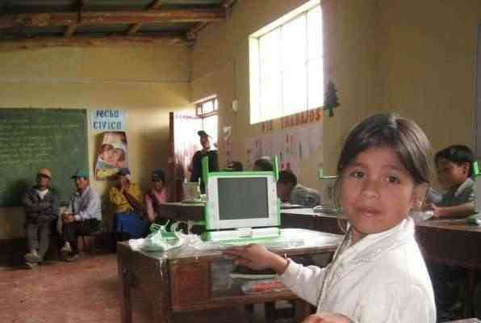
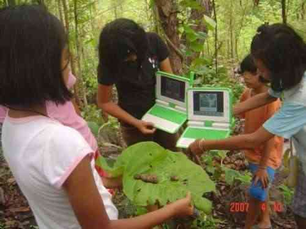

| Index | Pour commencer |
Vous avez sûrement entendu parler du projet One Laptop per Child (OLPC - un ordinateur portable par enfant). Le but de ce projet est de proposer aux enfants des pays en voie de développement des ordinateurs portables solides, peu coûteux et économes en énergie.
L'ordinateur portable XO est un outil éducatif conçu pour pouvoir être mis entre les mains de tous les enfants. Grâce à l'utilisation de logiciels libres et aux efforts de développeurs du monde entier, OLPC a réussi à diffuser l'ordinateur XO dans plusieurs langues partout dans le monde.

En classe, dans une école au Pérou
Le XO utilise un logiciel libre, Sugar. Le code source de ce logiciel est ouvert, ce qui permet à n'importe quelle personne d'utiliser, de copier, d'améliorer ce logiciel, puis d'en partager des versions modifiées sur le web. Beaucoup de monde contribue à OLPC et juge que cette liberté est importante pour atteindre les buts éducatifs du projet OLPC.
Après avoir entendu les anecdotes sur l'utilisation d'un ordinateur portable accessible aux enfants ou avoir vu des photographies d'un petit ordinateur manipulé par un enfant, vous doutez peut-être des capacités du XO. Mais lorsque vous découvrez cet ordinateur compact et solide avec sa poignée et ses couleurs uniques, vous réalisez alors le fort potentiel du XO pour les enfants du monde entier.
Lorsque vous ouvrez le XO, vous voyez un écran haute résolution, facile à lire et qui peut être utilisé en plein soleil. Vous pouvez également retourner l'écran du XO pour le mettre en mode livre. Le XO a été conçu pour être emmené en plein air et survivre aux péripéties de la vie quotidienne d'un enfant.
Nous espérons que, plus vous en apprendrez au sujet de l'ordinateur portable XO en lisant les pages suivantes, plus vous pourrez apprendre avec l'ordinateur portable XO.

Lors d'une excursion en Thaïlande
| Index | Pour commencer |